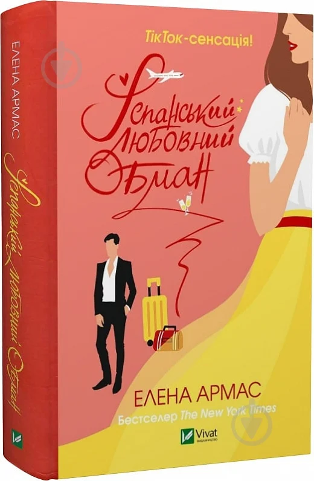
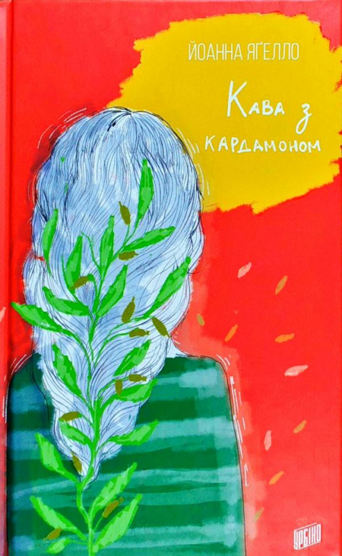
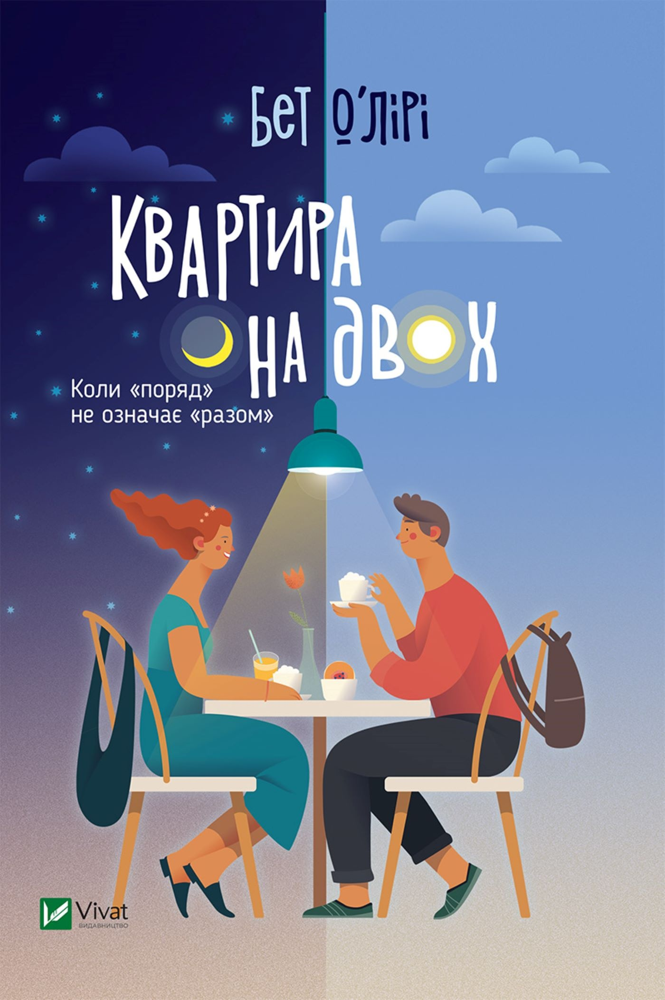

<!DOCTYPE html>
<html lang="en">
<head>
    <meta charset="UTF-8">
    <meta name="viewport" content="width=device-width, initial-scale=1.0">
    <title>Document</title>
</head>

</html>

<div class="romantic-title">
    <h1> Романтика</h1>
    <p> Романтика – це не просто літературний жанр, а ціла всесвітня мова серця, яка дозволяє нам відчути всю палітру емоцій, від ніжної трепетності першого кохання до глибинної туги розлуки. Це подорож у світ мрій, де кожне слово пульсує життям, а кожна сторінка розкриває перед нами нові грані людської душі.</p>
</div>

<div class="romantic-book1">
    
    <p>"Тисяча пам'ятних поцілунків" – це зворушлива історія про перше кохання, дружбу та силу спогадів, які залишаються з нами назавжди. Книга Тіллі Коул розповідає про пригоди Руна Крістіансена та Поппі Літчфілд, двох підлітків, які зустрічаються в новому містечку і разом вирушають у незабутню подорож, сповнену емоцій та відкриттів.</p>
</div>

<div class="romantic-book2">
    
    <p>"До зустрічі з тобою" – це зворушлива історія про кохання, життя і вибір, яка торкнеться найглибших струн вашої душі. Роман розповідає про Луїзу Кларк, молоду дівчину, яка працює в кафе і не має особливих планів на майбутнє. Її життя кардинально змінюється, коли вона влаштовується сиделкою до Уілла Трейнора, колишнього успішного бізнесмена, який після нещасного випадку опинився прикутим до інвалідного візка.</p>
</div>

<div class="romantic-book3">
    
    <p>"Іспанський любовний обман" Елени Армас – це захопливий роман, який перенесе вас у сонячну Іспанію, де кохання переплітається з інтригами та несподіваними поворотами.</p>
</div>

<div class="romantic-book4">
    
    <p>"Кава з кардамоном" – це зворушливий роман польської письменниці Йоанни Ягелло, який підкорив серця багатьох читачів, особливо підлітків. Це тепла історія про дружбу, перше кохання, сімейні таємниці та пошук себе</p>
</div>

<div class="romantic-book5">
    
    <p>"Квартира на двох" – це зворушливий роман британської письменниці Бет О'Лірі, який підкорив серця багатьох читачів по всьому світу. Це незвичайна історія про кохання, яке розквітає у найнесподіваніших умовах.</p>
</div>